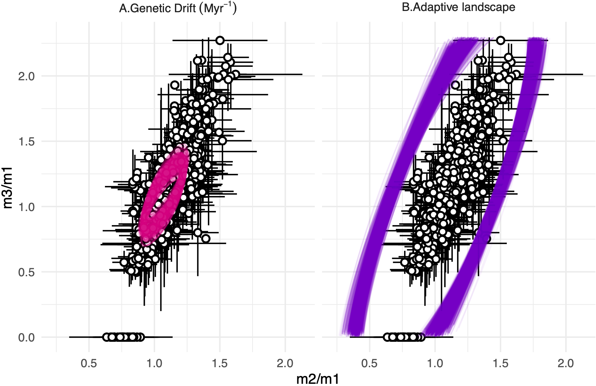
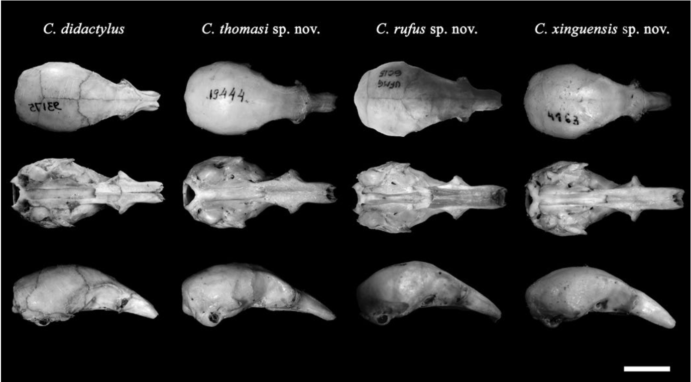

Bridging micro and macroevolution from an organismic perspective

The study of evolution has been classically divided into two fields: micro and macroevolution. While microevolution is concerned with evolutionary change that takes place within ecological and historical periods, macroevolution is the study of changes that happened throughout millions of years, at the paleontological time-scale. Classically, these fields have been seen as somewhat irreconcilable, as the models describing short-period changes cannot account for the complexities over longer periods of time. Results from our lab, however, show that the macroevolution of some biological systems follow very closely the predictions of microevolutionary models, opening the door for the incorporation of more biologically realistic assumptions in the study of macroevolution and paleontology. We have shown that simple rules of tooth development align micro- and macroevolution in living and fossil primates (Machado et al. 2023, Nature Ecology and Evolution), that a conserved covariance structure underlies 60 million years of primate skull diversification (Penna et al., preprint), and that lineages invading new adaptive zones retain telltale signs of directional selection over macroevolutionary time (Machado et al. 2026, Evolution Letters).
Evolution of the mammalian skull

The vertebrate skull is a complex system containing multiple individualized units (bones) formed along ontogeny by a complex interaction of numerous biological processes. The skull also has many organs and structures that perform various functions, such as perception, cognition, and food processing, making it a target of intense, and sometimes conflicting, selective pressures. We use the mammalian skull as a model to understand how selection can shape a complex structure. We integrate phylogenetic comparative methods, quantitative genetics theory and ecological information to investigate how the skull evolves and what internal and external factors might shape its diversification, from the extreme morphologies of extinct glyptodonts (Machado et al. 2022, Proc. R. Soc. B) to the ecomorphological adaptation of canids (Machado 2020, Am. Nat.).
Taxonomy and systematics
The basic unit of macroevolutionary studies is the species. Despite many centuries of documentation, we still know only a fraction of all species that exist. Recent studies have shown that even the diversity of large charismatic mammals can be underestimated. Our work focuses on describing new species from an integrative perspective, both molecular and morphological. Recent work includes the morphometric differentiation of the Himalayan wolf (Viranta et al. 2025) and the Pleistocene bush dog of Brazilian caves (Ruiz et al. 2024).

Natural history collections
Museum specimens are the raw material of our research. Fabio is the Curator of Vertebrates at the Oklahoma State University Collection of Vertebrates, where we curate, digitize and expand the collection, and train undergraduate students in specimen preparation and collection-based research. We also explore new tools, such as virtual reality, for visualizing and quantifying anatomy.
Collections also make new kinds of functional and evolutionary research possible. We used preserved Peromyscus specimens to examine variation in head and pinna morphology and its implications for auditory function (Sergott et al. 2025, Journal of Anatomy). In ranid frogs, micro-CT scans of fluid-preserved specimens complemented genomic analyses of hybridization, while examination of a specimen collected two decades earlier revealed an additional likely hybrid (Edwards et al. 2025, Ecology and Evolution). These studies show how preserved specimens support research on animal function and provide historical context for contemporary biodiversity.